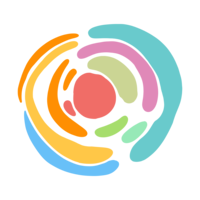

AIGYPT × AINA · UNTUK MASISIR
Update Skills. Upgrade Life.
AI for Masisir.
Malam ini, kita cerita tentang sebuah komunitas — dan sebuah karya — yang lahir dari keseharian Masisir.
TEKAN SPASI UNTUK MULAI ↓
Sebelum mulai, jujur-jujuran dulu.
Tenang. Kita semua sama. Dan malam ini, kita bahas jalan keluarnya.
SEDERHANANYA BEGINI
Sebenarnya, apa sih AI itu?
Bayangkan punya asisten pribadi yang bisa diajak ngobrol. Dia bisa bantu merangkum catatan, menyusun jadwal, menulis draf laporan, sampai membuat desain promosi — dalam hitungan detik.
AI bukan pengganti manusia. AI itu alat — seperti kalkulator, tapi untuk ide, tulisan, dan pekerjaan. Dan kendalinya tetap di tangan kita.
Kenalin: AIGYPT.
Komunitas belajar AI pertama untuk Masisir — mahasiswa Indonesia di Mesir. Tempat belajar teknologi dengan bahasa sehari-hari, dari nol, bareng-bareng.
BELAJAR BARENG
Kelas & modul dari nol. Gak perlu latar belakang IT — yang penting mau mencoba.
PRAKTIK LANGSUNG
Bukan teori. Langsung dipakai untuk kuliah, organisasi, dan bisnis besok pagi.
TUMBUH BERSAMA
Komunitas, showcase karya, dan sertifikat. Belajar paling awet itu yang ditemani.
Visi kami sederhana: 2025 mengenalkan AI dalam keseharian Masisir — 2026 mengajak Masisir membangun karya dari masalahnya sendiri.
JEJAK YANG SUDAH DITEMPUH
Dari titik nol sampai berkarya.
BATCH 0 — Titik Nol
Kelas perdana
Membangun cara pandang yang sehat tentang AI & adab memakainya. Ruangan penuh.
BATCH 1 — Jadi Komunitas
Skala membesar
Peserta datang dari berbagai kalangan. Dari kelas, tumbuh jadi komunitas belajar bersama.
BATCH 3 — Mulai Berkarya
Dari belajar ke berkarya
Peserta membangun karya dari masalah sehari-hari — sampai tampil di Demo Day.
Lihat momen-momennya di galeri berikut →
MOMEN-MOMEN AIGYPT
Galeri perjalanan.
DI KELAS AIGYPT
Yang dipelajari — dan langsung kepakai.
Cara pandang & adab ber-AI
AI sebagai alat bantu, bukan pengganti guru & ilmu.
Ngobrol dengan AI (prompting)
Cara bertanya yang benar biar jawabannya benar.
Desain tanpa harus jago desain
Konten & poster menarik dalam hitungan menit.
Hidup lebih teratur
Catatan rapi, jadwal jelas, hafalan terjadwal.
AI untuk organisasi & bisnis
Proposal, laporan, promosi, balas chat otomatis.
Showcase karya + sertifikat
Pulang bawa karya nyata, bukan cuma ilmu.
Terbuka untuk semua kalangan — yang fokus ngaji, aktivis, pebisnis, sampai kreator.
Dari komunitas ini,
lahir sebuah karya.
Dibuat oleh Masisir, untuk Masisir.
KARYA PERTAMA · VISI 2026 JADI NYATA
Kenalin: AINA.
Asisten pintar untuk Masisir — komunitas lebih dari 10.000 pelajar Indonesia di Mesir. Cukup tanya, seperti chat ke teman.
Paham istilah kita: iqomah, jawazat, sakan, muqorror. Hafal daerah Kairo — dari Darrasah sampai Hay Asyir.
Yang sudah lebih dulu ngurus iqomah, ngerasain imtihan, dan cari sakan. Jawabnya hangat, jelas, dan gak bikin panik.
AINA mengingat kebutuhanmu dari obrolan sebelumnya, jadi makin lama makin nyambung.
AINA
online — siap bantu
SATU PLATFORM, BANYAK TEMAN
AINA bukan cuma tempat bertanya.
Semua kebutuhan hidup mahasiswa di Mesir — dalam satu platform.
💬 CHAT AI
Tanya apa saja: administrasi, kuliah, tempat tinggal, kehidupan di Mesir.
✅ RUANG PRODUKTIF
Checklist urusan (perpanjang iqomah, daftar ulang), fokus harian, dan pengingat.
📚 LIBRARY MUQORROR
Muqorror & dokumen kuliah tersusun rapi per jurusan dan tahun — lengkap dengan ringkasan.
🃏 TEMAN BELAJAR
Flashcard & rangkuman untuk mengulang pelajaran dan menjaga hafalan.
🗣️ FORUM MASISIR
Ruang tanya-jawab antar Masisir. Pengalaman senior jadi ilmu bersama.
📰 BERITA MASISIR
Info dan pengumuman penting, terkumpul di satu tempat — gak ketinggalan lagi.
Apa aja yang bisa ditanya ke AINA?
Kalau Masisir pernah bingung soal itu — AINA memang dibuat untuk itu.
INI KARYA KITA BERSAMA
AINA tumbuh bersama penggunanya.
KONTRIBUTOR MASISIR
Senior dan siapapun bisa menyumbang pengetahuan. Pengalamanmu jadi jawaban untuk ribuan orang lain.
MAKIN DIPAKAI, MAKIN PINTAR
Setiap pertanyaan dan masukan membuat jawaban AINA berikutnya lebih baik.
DARI MASISIR, UNTUK MASISIR
Dibangun anak Masisir sendiri — bukti nyata visi 2026: dari pengguna, jadi pembuat.
Inilah yang terjadi kalau komunitas belajar — lalu berkarya.
ORANG-ORANG DI BALIK LAYAR
Dibangun oleh anak Masisir sendiri.
Bukan perusahaan besar. Bukan tim dari luar. Tiga belas anak muda Masisir — yang belajar, begadang, dan membangun ini bareng-bareng.
TUMBUH & BERKOLABORASI BERSAMA

Kalau anak Masisir bisa membangun ini — bayangkan apa lagi yang bisa kita bangun bersama.
"AI buat semua yang pengen hidup lebih gampang. Masisir gak boleh cuma nonton dari pinggir — kita harus ikut main, dan ikut membangun."
— DARU · FOUNDER AIGYPT
Ayo jadi bagian dari cerita ini.
AIGYPT terbuka untuk kolaborasi dengan siapapun — individu, organisasi, maupun lembaga.